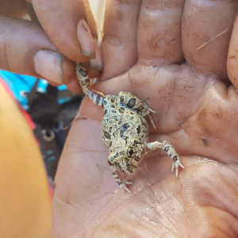
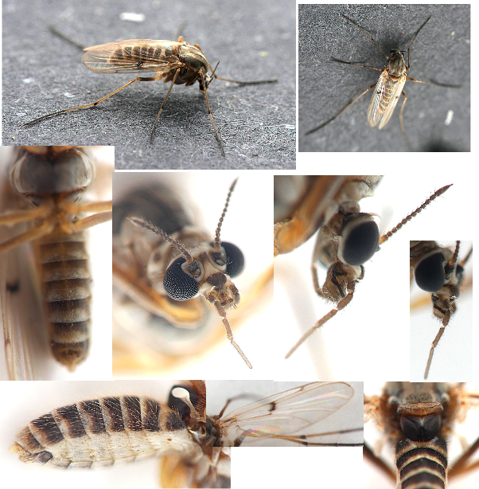

Former teacher and CSIRO’s Indigenous STEM Program Coordinator Geoff Guymer has a wealth of experience teaching in classrooms across Australia and loves using the ALA.
When Geoff was teaching Science and Mathematics at a high school in Altona in Victoria, he frequently used the ALA in the classroom. One example is a game he developed for the students to play as part of the school’s annual celebration of Indigenous culture.
This game can be easily adapted for any classroom, anywhere in Australia. In this particular instance, the game was named after the traditional people and custodians of the land that encompasses Altona.
To develop the game, Geoff and his students used the ALA’s Explore your area feature to find out which native animals and plants had been recorded around their school. Then, with a local elder, the group chose a number of species that had cultural significance and learned the Indigenous names for those species.
Next, they made game cards for each species. Game cards consisted of an image of the animal or plant, its common, scientific and local Indigenous name, and additional Indigenous knowledge and cultural information about the species. The students researched all this information using the ALA species pages and other sources.
Game card for the Crow
Game card for the Australian Blackwood
Geoff then placed numbers on a map of the school grounds and placed one game card at the location of each number. To play the game, students ran around the schoolyard, following the map to each of the numbers to find the game cards. They filled out a worksheet with the information on each game card.
Geoff created a map of the school yard with numbers indicating the location of each game card.
Students completed a worksheet with information from the game cards they found in the school yard.
While initially designed for his school’s Indigenous culture day, Geoff realised that participating in this type of activity addresses a number of requirements of the Australian Curriculum at various year levels.
“The ALA can help fulfil many areas of the science curriculum such as Classification and Adaptations, but it can also help illustrate maths and spatial reasoning and is excellent for incorporating the Aboriginal and Torres Strait Islander Histories and Cultures Cross-Curriculum Priority,” Geoff said.
Further case studies will outline some other examples of Geoff’s work using the ALA in the classroom.
Note: All Boonwurrung language references were given to Geoff Guymer, CSIRO, by Auntie Fay Stewart-Muir, Victorian Aboriginal Corporation for Languages to be used as educational tools.
Article
Bushcare group use ALA in suburban Brisbane
Since finding out about the ALA, the Rocky Waterholes-Salisbury Bushcare group have been using it in a number of ways to enhance their site in suburban Brisbane.
Bushcare groups are made up of volunteers across Australia who come together to restore natural environments in urban reserves. Among other activities, the Rocky Waterholes-Salisbury group cleans up rubbish, removes weeds, and propagates and plants native shrubs and trees.
Volunteers also consult with other community members. Recently, they have organised talks on weed management from bush restoration experts, received training on tool use, engaged Scout groups in planting events and learned about indigenous uses of plants from local elders.
An area with holes dug ready for planting
A number of different weed species were collected during one of the group’s recent work days
Greg Tasney, a member of the group, uses the ALA to log sightings and help build a picture of local biodiversity. The group shares the ALA login so that all members can add to the database.
“Information from the ALA specifically about our site is used in grant applications and defence submissions against future development. The data illustrates the diversity of species living onsite, and highlights how important our bush care program is,” Mr Tasney said.
The elusive Buff-Banded Rail, the “animal emblem” of the Rocky Waterholes-Salisbury Bushcare group.
Mr Tasney also uses the ALA to search occurrence records in surrounding areas. Based on sightings in surrounding areas, Greg believes that Red-necked Wallabies could already be using the local riparian and creek corridors to move into and out of nearby Toohey Forest Park.
“After our recent plantings have grown and thickened, I predict the Rocky Waterholes-Salisbury area will become an important natural vegetation and wildlife corridor,” he said.
A regular sight at the Rocky Waterholes site are the water dragons sleeping in the branches
Check out the Rocky Waterholes-Salisbury Bushcare Facebook page if you want to keep up with their activities. Contact us if you would like to share how you’re using the ALA.
Article
Spotlight on ALA Users - Catherine Clowes
Catherine Clowes, from the University of Melbourne is using the ALA while researching for her PhD.
Catherine’s project is focused on the native shrub Spyridium parvifolium. The plant, also known as Dusty Miller, is endemic to South Australia, Victoria, New South Wales and Tasmania. She aims to investigate the phylogeny, morphology, genetic diversity, phylogeography and ecology of the species.
Cat Clowes [@mammaknowsplants] Spyridium parvifolium (Instagram, September 15, 2016) Accessed September 8, 2017.
She used the ALA to help locate potential populations to collect samples (with the appropriate permits). She also used the ALA to generate species lists for the collecting sites to be used as recording sheets while in the field and to produce field guides from those lists.
“I’ve found ALA useful because it brings all sorts of records (herbarium data, field observations by parks officers and consultants and records by citizen scientists etc.) together into one easy to use national data base”, Catherine said.
“Since I use ALA so regularly I decided to become a contributor. I try and make sure that whenever I load a species image onto Instagram I also record it on ALA to give a little back to ALA since I personally (and professionally) gain so much from it!”
Eucalyptus gracilis and Maireana brevifolia. Images by Catherine Clowes - ALA Individual Sightings
Catherine is also using her expertise in plant identification to help her local community by managing a grassland where a population of the nationally threatened Spiny Rice Flower (Pimelea spinescens subsp spinescens) was found. She has since made a detailed species list for the site and completed a vegetation quality assessment to get a baseline of the condition of the community.

Pimelea linifolia subsp. linifolia. Image by Catherine Clowes - ALA Individual Sightings
We first contacted Catherine after we noticed her great images appearing in the ALA’s Recent Sightings. Since then we have offered some advice so she can use the ALA more effectively for her research. If you’d like to share with us how you are using the ALA to assist your research, please contact us.
Article
Spotlight on ALA Users - Clare Pearce
Clare Pearce’s images in the ALA’s Recent Sightings could be part of a tourism campaign advertising the Northern Territory.
Clare is the Community Engagement Officer with Parks and Wildlife based in Katherine. Part of her role involves working with kids in the Junior Ranger program. The program delivers hands-on activities based in environmental education for between 10-30 kids at a time, including activities such as hiking, tracking, navigation, spotlighting and birdwatching.
Egretta picata. Image by Clare Pearce - ALA Individual Sightings
Her groups don’t do any formal collecting activities, but Clare enters some of the images of things they find during their activities in and around the Nitmiluk National Park. She said that the kids are getting better at being careful with the animals they find and they’re especially keen on frogs, bugs and geckos.

Platyplectrum ornatum. Image by Clare Pearce - ALA Individual Sightings
As well as contributing the sightings to the ALA database, she uses the species information, images and species distribution maps to assist in identifying the specimens.
Ranger Clare also presents talks to schools and community members and contributes articles to websites and newspapers. The ALA is one of the resources she uses to check facts while preparing these.
Nymphaea violacea. Image by Clare Pearce - ALA Individual Sightings
She was initially reluctant to contribute to the ALA as she didn’t think her data was “good enough”. With her wealth of knowledge and photography skills, we are glad that she started adding her sightings to share with others through the ALA.
Please contact us if you would like to share how you use the ALA.
Article
Spotlight on ALA users - Vuk Vojisavljevic
If you’re familiar with our User Profiles blog series, you’ll know that people add to the ALA’s Individual Sightings for a range of reasons, but all share a passion for Australia’s species. Vuk Vojisavljevic is no different. When it comes to identifying species using images, as is common with citizen scientists, the more detail included the better. Many of Vuk’s insect images are taken with the intention to highlight identifying features that distinguish one species from another.
Specimen from the family Eulophidae. Image by Vuk Vojisavljevic
He uses the ALA as a “quick search for basic classification facts”. To classify further, he follows keys from published articles, which is sometimes a “very difficult job”. He uses affordable macro lenses and free online software to create the composite images.

Specimen from the genus Procladius. Image by Vuk Vojisavljevic
He has been surprised by just how many different species he has been able to find when he goes collecting. On one trip he found over 1000 different species on “a few coastal Acacia trees”. “Each week the list of species is different” he said. While his addition of the photos is a hobby for him now, it is obvious he spends a lot of time to share his knowledge, passion and interest with others through the ALA.
Please contact us if you would like to share how you use the ALA.
Article
Spotlight on ALA Users – Tim Bawden
We first discovered Tim Bawden’s images while searching through the ALA’s Recent Sightings for some pictures of Australian mammals for promotional material. Digging through them, we found a great collection of sightings - many of rarely-seen species. They also cover a wide variety of locations around the country.
Luaner (Dasyurus viverrinus). Image by Tim Bawden
Tim uses the ALA to work out new areas to explore and look for areas that contain “target” species that he hasn’t seen before.
Peron’s Tree Frog (Litoria peronii). Image by Tim Bawden
He doesn’t use the ALA for identification assistance, other than to work out the range of the species.
Leopard Seal (Hydrurga leptonyx). Image by Tim Bawden.
He prioritises entering the images of species that are “interesting or rare” into the ALA. He works in IT and his hobby of using the ALA is a “good diversion”.
Sugar Glider (Petaurus breviceps). Image by Tim Bawden
Many of Tim’s images are now the feature image for that species in the ALA.
Please contact us if you would like to share how you use the ALA.
Article
Our top tips on species identification
Have you ever spotted a plant or animal and been unsure of what it is? If the answer is yes, then you’re not alone. In fact, one of the most common questions we get asked at the Atlas of Living Australia (ALA) is: “what is this species?”
Rachel Marks spotted this unknown fungus in the Royal National Park
Unknown moth image by David Middlebrook in the Blue Mountains NSW
The ALA is home to millions of records about Australia’s amazing biodiversity, enabling us to have more detailed picture of Australia’s biodiversity than ever before. These records come from many places- museums, herbaria, universities, and government departments just to name a few. In addition to this, we also rely on community sightings. Sometimes you may have spotted something unique in your area, but before posting it to the ALA, you want to be sure what it is. To help you with this, we’ve put together some tips on how to go about identifying a species.
Top tip #1
Visit our Species identification information page. Here you will find links to a number of resources that may be able to help you with identifying unknown Australian species. BowerBird for example, allows you to share your sightings and get help with identifying it. The ALA is not able to help directly with species identification but we’re more than happy to point you in the direction of the organisations who can help.
Top tip #2
Check out what has already been sighted in that area. Did you know that you can use the ALA to map the occurrence records at a particular location? That way you can see which species have already been sighted in the area and possibly match the species you have seen to one of them. This is a good place to start your search and it will also give you a bit of insight into your local biodiversity.
Simply go to Explore locations from the ALA home page, then Explore by location.
Then type in your suburb or postcode or street name. You can change the radius of the range and move the red pin. You can filter the results by clicking on the group.
A map of the species occurrence records in a suburb of the ACT.
A more detailed description of this process can be found in the ALA User Guides.
If you found this helpful, keep your eye out on our blog for more tips on how to get the most out of the ALA, and your frequently asked questions answered.
Article
Promoting STEM in the classroom
Earlier this month, 70 teachers with a passion for Science, Technology, Engineering and Maths (STEM) came together to participate in the STEM X Academy to further develop their capability to deliver quality science education in the classroom.
School is back for students around the country this week, but in many cases the teachers have been hard at work over the school holidays. Earlier this month, 70 teachers with a passion for Science, Technology, Engineering and Maths (STEM) came together to participate in the STEM X Academy to further develop their capability to deliver quality science education in the classroom.
The Atlas of Living Australia (ALA) was proud to be part of the STEM X Academy and ran a hands-on workshop for teachers to find out how they can incorporate the ALA in the classroom.
The STEM X Academy is a five-day residential teacher professional learning program open to Australian teachers across all sectors and levels of experience. Held in Canberra from 8-13 January, the event was a partnership between the Australian Science Teachers Association (ASTA), Questacon and CSIRO.
Teachers from the STEM X Academy use the ALA to identify what they caught in the traps they designed
The main focus of the program was the development of hands-on, enquiry-based lessons and activities using available materials, and adapting activities using methods to suit individual classrooms.
As a part of the busy program, teachers split into groups with educators and research scientists and worked on developing potential solutions to future global challenges using STEM. The ALA presentation was one of a number of skillset workshops provided to potentially assist the teachers with completing the tasks.
A couple of participants were even lucky enough to have a tour of CSIRO’s Australian National Insect Collection, guided by Bryan Lessard also known as (aka) Bry the Fly Guy.
Brian Lessard shows teachers through the Australian National Insect Collection
For more information about STEM X, click here. For more information about using the ALA in the classroom check out our Educational Resources.
Article
Spotlight on ALA users - Reiner Richter
One of our most prolific contributors to the ALA is Reiner Richter, a wildlife photographer from Victoria. He has been taking nature photographs as a hobby for many years and has submitted over 13,000 fantastic sightings to the ALA.
Reiner uses the ALA to assist with identification for species that he is less familiar with.
“If I know what the genus might be I will search for species within that genera that are nearby using the mapping tools,” Reiner said.
He also uses the ALA to find gaps in data then embarks on expeditions to fill them. A couple of years ago, he noticed a gap between Lakes Entrance and Orbost and upon searching there, he found a population of Austrocnemis splendida, a small damselfly that is quite rare in the state.
Austrocnemis splendida by Reiner Richter
While searching for and photographing species, Reiner has made some interesting discoveries. His rediscovery of a Micraspis flavovittata, a ladybeetle thought to be extinct, garnered some attention in the mainstream media. From the unique markings, he knew on sight that this was a new species for him personally. Not finding an image of such a species anywhere on the web, he passed it on to experts, starting with Museum Victoria. He is hopeful that this species can get listed as critically endangered as a result.
Micraspis flavovittata by Reiner Richter
One of the things Reiner finds most rewarding is to photograph fungi in winter.
“Many strange fungi remain unidentified as the kingdom is vast and there are few experts in the field, so relatively few species have been described,” Reiner said.
Mycena kurramulla by Reiner Richter
If you’d like to see more of Reiner’s images, you can look through his Recent Sightings, or check out his online photo gallery at http://photos.rnr.id.au/.
Please contact us if you would like to share how you use the ALA.
Article
ALA Workshop for teachers in the ACT